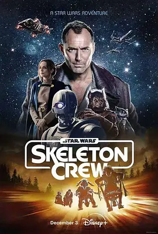

7.0
星球大战：骨干小队
Star Wars: Skeleton Crew
2024
美国
评分 7.0
导演:
关家永 / 丹尼尔·施纳特 / 乔恩·沃茨 / 大卫·洛维 / 杰克·施莱尔
演员:
裘德·洛 / 基里亚娜·克拉特 / 拉维·卡伯特-科尼尔斯 / 凯瑞·康顿 / 滕德·艾德比佩
类型:
冒险,动作,科幻
剧情简介
在帝国覆灭数年后的银河边缘，一艘废弃飞船引发了一场儿童冒险的序幕。四位住在安静乡镇的孩子——Wim、Fern、KB与Neel，在他们的家乡星球At Attin意外发现那艘幽灵般的太空船，进而被卷入银河中的黑暗阴谋与未知旅程。裘德·洛饰演的Jod Na Nawood是一个魅惑的原海盗，同时又拥有神秘力量，他协助孩子们穿越星际，从未知星球到密林荒野，从高耸飞桥到破败工厂，四人在逃亡与探索中逐渐成长。一路上，他们面对的不仅是外部的危险──破碎文明、追踪者、失控机器，还有内心的阴影：KB必须直面自己的机械义眼带来的创伤；Wim对“成为绝地”的幻想与现实碰撞；Fern从孩子气中觉醒责任；Neel这个异星少年的身份也让他时常感到孤独。整部剧节奏紧凑却充满温情，动作场面与奇幻元素交织，既有飞船追逐，也有星球探险，更有四个孩子互助与试错的过程。故事并不一味宏大，而是在星际背景下聚焦“归家”这个贴近少年的核心主题：在广阔宇宙中，回家的意义，或许就是懂得携手与成长。